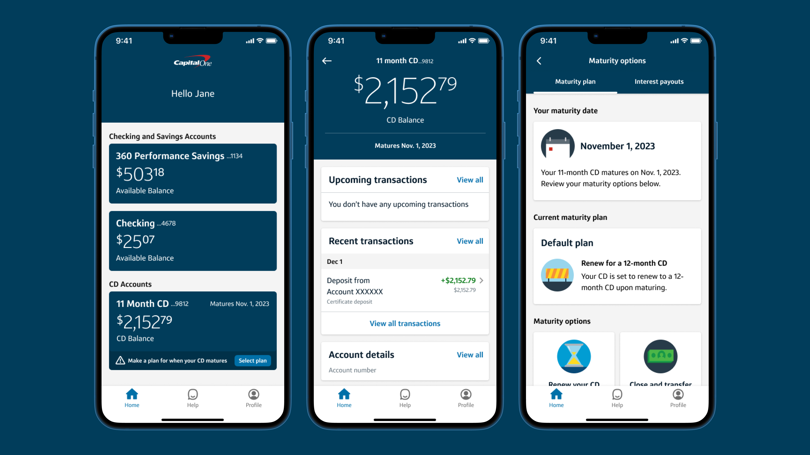
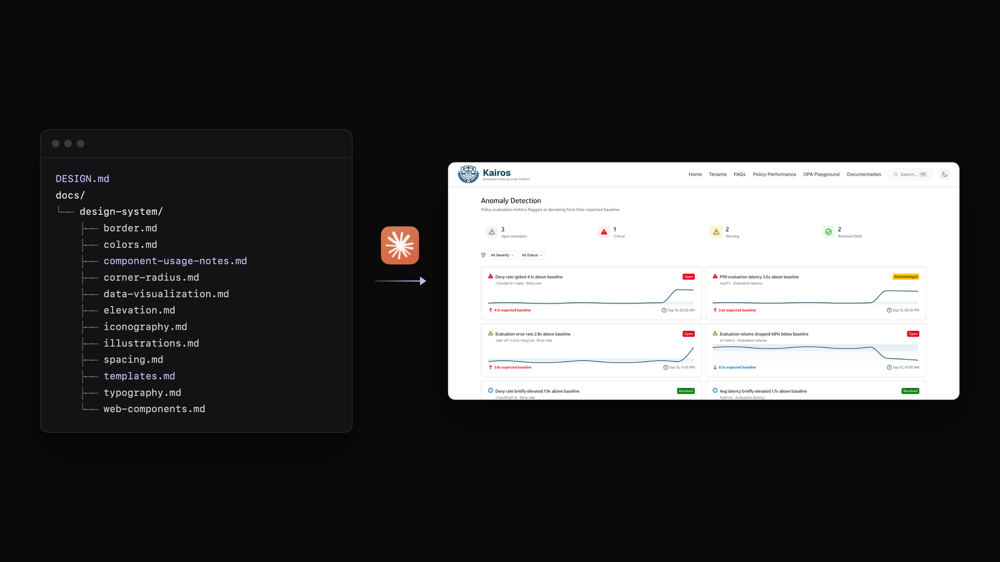
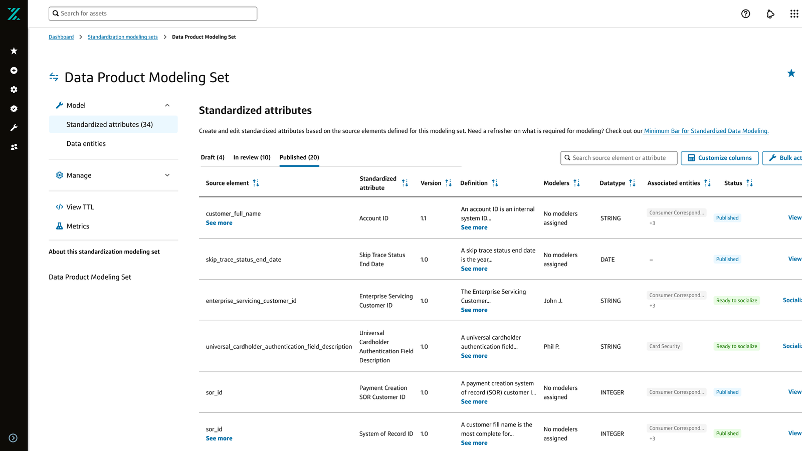

Designer, Strategist, & Problem Solver
From developer tooling
From developer tooling
to consumer banking,
I turn complex problems
into intuitive experiences.
Currently designing for Internal Tools @ Capital One.
See my work
Work
Filter

Capital One — CDs
Retaining customers and enhancing the mobile experience for certificate of deposit accounts.
View case study 11 min read
Capital One — DESIGN.md
Writing design standards AI coding agents can follow, so generated UI matches Capital One's design system.
View case study 7 min read
Capital One — BluePrint
Providing architecture pattern recommendations for application engineers.
View case study 6 min read
Capital One — Workbench
Helping data modelers register and govern standardized data attributes across Capital One's Enterprise Data platform.
View case study 7 min read